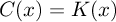

What is NCD?
Normalized Compression Distance (NCD) is actually a family of functions which take as arguments two objects (literal files, Google search terms) and evaluate a fixed formula expressed in terms of the compressed versions of these objects, separately and combined. Hence this family of functions is parametrized by the compressor used. If x and y are the two objects concerned, and C(x) is the length of the compressed version of x using compressor C, then the
The method is the outcome of a mathematical theoretical developments based on Kolmogorov complexity.
The family of NCD's includes the
- NID Normalized Information Distance when the compressor reaches the Kolmogorov complexity of the data, so , the Kolmogorov complexity of x, and we use so to speak the Kolmogorov complexity compressor
- NGD Normalized Google Distance when Google is used to determine a probability density function over search terms that yields a Shannon-Fano code length by taking the negative log of the probability of a term. This process of deriving a code length from a search term can be considered as a Google compressor.
Further Reading
Algorithmic Clustering of Music - This early paper focuses on unsupervised music analysis such as genre recognition, composer identification, and others.
Clustering by Compression - This paper shores up the theory of normal compressors and establishes in detail several important theoretical properties of NCD and NID. It also provides solid evidence of robustness and generality with an extensive body of experiments. The method is implemented and available as public software, and is robust under choice of different compressors. We substantiate our claims of universality and robustness, by reporting evidence of successful application in areas as diverse as genomics, virology, languages, literature, music, handwritten digits, astronomy, and combinations of objects from completely different domains, using statistical, dictionary, and block sorting compressors. It also foreshadows things to come with the first supervised NCD-type algorithm using a Support Vector Machine with gzip to do the handwriting recognition.
Automatic Meaning Discovery Using Google - In this surprising paper we explore in greater detail the supervised learning capabilities of NGD, the Normalized Google Distance. We explore examples in language, emergency classification, and unsupervised concept clustering. We compare against Word Net semantic categories created by human experts. And we allude to potential applications of the new techniques.
Bibliography
D. Benedetto, E. Caglioti, and V. Loreto. Language trees and zipping, Physical Review Letters, 88:4(2002) 048702. C.H. Bennett, P. Gacs, M. Li, P.M.B. Vitanyi, and W. Zurek. Information Distance, IEEE Transactions on Information Theory, 44:4(1998), 1407--1423. C.H. Bennett, M. Li, B. Ma, Chain letters and evolutionary histories, Scientific American, June 2003, 76--81.
X. Chen, B. Francia, M. Li, B. McKinnon, A. Seker, Shared information and program plagiarism detection, IEEE Trans. Inform. Th., 50:7(2004), 1545--1551.
R. Cilibrasi, P.M.B. Vitanyi, R. de Wolf, Algorithmic clustering of music based on string compression, Computer Music Journal, 28:4(2004), 49-67. R. Cilibrasi, P.M.B. Vitanyi, Clustering by compression, IEEE Trans. Inform. Th., 51:4(2005) R. Cilibrasi, P.M.B. Vitanyi, Automatic meaning discovery using Google, http://xxx.lanl.gov/abs/cs.CL/0412098 (2004)
E. Keogh, S. Lonardi, and C.A. Rtanamahatana, Toward parameter-free data mining, In: Proc. 10th ACM SIGKDD Intn'l Conf. Knowledge Discovery and Data Mining, Seattle, Washington, USA, August 22---25, 2004, 206--215. M. Li, J.H. Badger, X. Chen, S. Kwong, P. Kearney, and H. Zhang. An information-based sequence distance and its application to whole mitochondrial genome phylogeny, Bioinformatics, 17:2(2001), 149--154. M. Li and P.M.B. Vitanyi, Reversibility and adiabatic computation: trading time and space for energy, Proc. Royal Society of London, Series A, 452(1996), 769-789.
M. Li and P.M.B Vitanyi. Algorithmic Complexity, pp. 376--382 in: International Encyclopedia of the Social & Behavioral Sciences, N.J. Smelser and P.B. Baltes, Eds., Pergamon, Oxford, 2001/2002.
M. Li, X. Chen, X. Li, B. Ma, P.M.B. Vitanyi. The similarity metric, IEEE Trans. Inform. Th., 50:12(2004), 3250- 3264.
M. Li and P.M.B. Vitanyi. An Introduction to Kolmogorov Complexity and its Applications, Springer-Verlag, New York, 2nd Edition, 1997.
A.Londei, V. Loreto, M.O. Belardinelli, Music style and authorship categorization by informative compressors, Proc. 5th Triannual Conference of the European Society for the Cognitive Sciences of Music (ESCOM), September 8-13, 2003, Hannover, Germany, pp. 200-203.
S. Wehner, Analyzing network traffic and worms using compression, Manuscript, CWI, 2004. Partially available http://arxiv.org/pdf/cs.CR/0504045